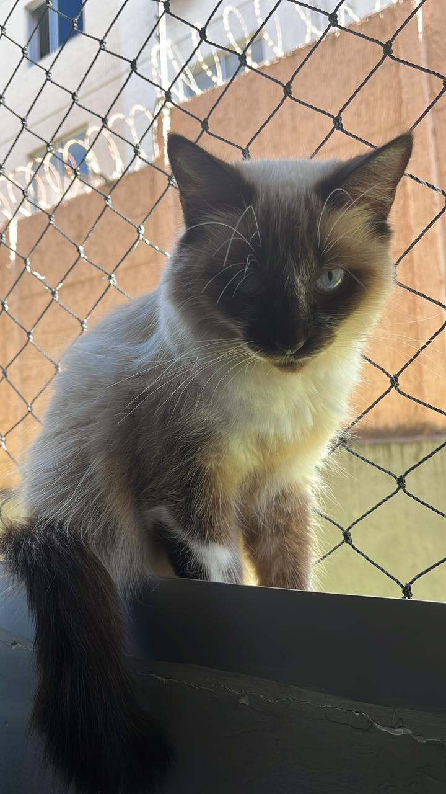
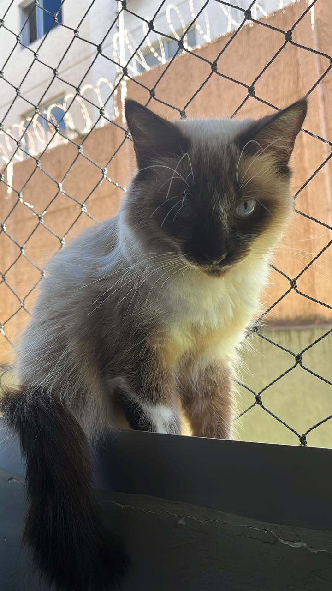
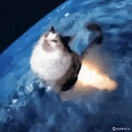
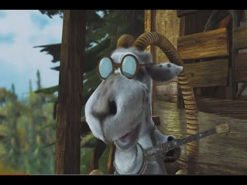
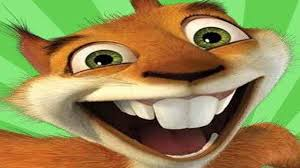
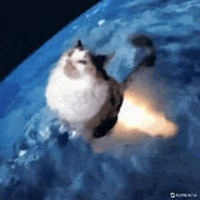
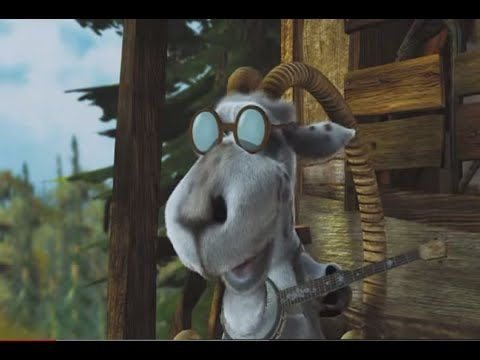
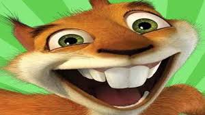

🎉 Parabéns!
Você é muito especial para mim, eu teamo mil milhoes.
Obrigado por sempre ser tanto, para mim e para todos ao seu redor!
Você é a pessoa com o maior coração que eu conheço.Sempre fofa e gentil com todos.
Você é gigante!!!! tenho muito orgulho de você
Estou morrendo de saudades.
 

 




